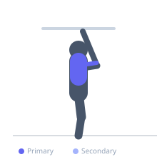
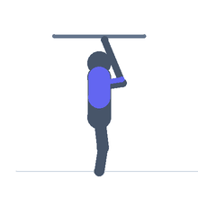

Exercise guide / Typewriter Pull-Up
Typewriter Pull-Up
The typewriter pull-up is an advanced calisthenics variation where the lifter pulls to the top of a pull-up and then traverses horizontally across the bar — moving from side to side like a typewriter carriage — before descending. This lateral movement under full load targets the lats, biceps, and scapular stabilizers through a unique range of motion and builds exceptional pulling strength and body control.
Primary muscles
latissimus dorsi
biceps brachii long head
Secondary muscles
rhomboid major
teres major
trapezius middle
Stabilizers
transverse abdominis
infraspinatus
Equipment
Pull-Up Bar (Doorframe)
Optional
Pull-Up Bar (Wall-Mounted)


Starting position
- Hang from a pull-up bar with a wide overhand grip, arms fully extended.
Setup
- Use a straight pull-up bar wide enough to allow lateral movement. Ensure a solid grip on the bar.
Steps
- Step 1: Pull up until the chin clears the bar.
- Step 2: While maintaining the top position, shift the body laterally toward the right hand by extending the left arm.
- Step 3: Move fully to the right side so the chin is near the right hand.
- Step 4: Traverse back across to the left side.
- Step 5: Once back in the center, lower slowly to full dead hang.
Coaching cues
- Stay at the top — do not let yourself drop during the traverse
- Slide smoothly side to side rather than jerking
- Engage the core hard to prevent leg swing
Breathing
- Exhale during the initial pull. Breathe steadily while traversing. Inhale on the controlled descent.
Range of motion
- Full range from dead hang through traversal at the top.
Tempo
- 2s pull, controlled traverse, 3–4s descent
Common mistakes
- Dropping from the top position before completing the traverse
- Lacking the shoulder stability to control the lateral shift safely
- Using a bar too narrow to allow meaningful lateral movement
Safety
- Ensure grip strength is sufficient — dropping from this position unexpectedly can cause injury
- Only attempt after mastering controlled pull-up negatives and archer pull-ups
Training
- strength: 2–4 reps
- strength: 3–5 sets
- Rest: {'strength': 180}